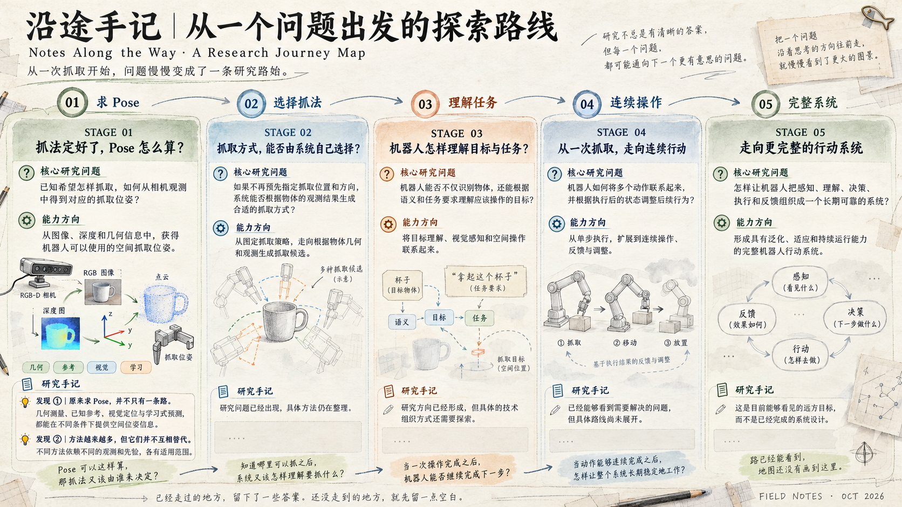

A LITTLE GOAL
我想做的事
想弄明白机器人怎样从「看见东西」走到「真的能动手」。有时靠几何，有时借助模型，有时还得回去补一补相机和空间的基础。先把眼前的问题理解清楚，再试着让它真的跑起来。
CURRENTLY EXPLORING
最近在琢磨什么？
最近在想一件挺具体的事：如果已经知道怎么抓，机器人要怎样算出夹爪该放在哪里？

Stage 01 · 研究插图
放一张能让人看清整体思路的图。
不是把所有算法塞进来。
不是把所有算法塞进来。
STAGE 01 · GRASP POSE
抓法定好了，
Pose 怎么算？
一开始先从几何和已知参考入手，研究怎么把位置、方向算出来。后来发现，真实相机看到的是整个场景，目标观测还得自己先找到。
再往下看，几何、参考位姿、学习式空间线索，甚至直接预测抓取姿态，都可能是答案的一部分。原来这件事，并不是只有一条固定的流水线。
走进 Stage 01这一站的路线已经比较清楚，细节留在独立章节里慢慢看。
THE RESEARCH MAP · 01—05
现在画到这里了。
目前把研究暂时整理成五段。Stage 01 走得比较深入，后面的方向还在慢慢想清楚。与其现在硬把地图填满，不如先留下些迷雾，等真正研究到了，再把那一段画出来。

Stage 01—05 · 探索总图
一条主路，五个节点。
清楚的地方画清楚，没走到的地方先留在迷雾里。
清楚的地方画清楚，没走到的地方先留在迷雾里。
这张图会随研究进度更新；下面先把五个阶段的名字记下来。
FIVE STOPS · 目前的研究方向
STAGE 02
换了一个物体，
还能这样抓吗？
方向待整理
还能这样抓吗？
STAGE 03
目标由一句话指定，
又该怎么抓？
方向待整理
又该怎么抓？
STAGE 04
抓取姿态，
能从数据里学出来吗？
方向待整理
能从数据里学出来吗？
STAGE 05
从一次抓取，
到把事情做完。
远处还有一点雾
到把事情做完。
地图还没画完，也不用急着画完。
先把有趣的问题弄清楚。走到哪里，就慢慢记到哪里。
先把有趣的问题弄清楚。走到哪里，就慢慢记到哪里。